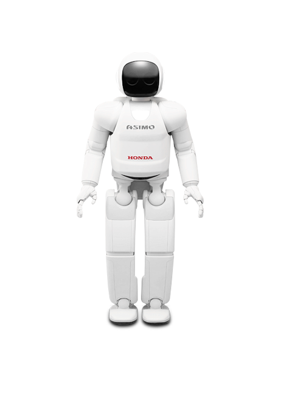

Robots!
Nowadays, robots do a lot of different tasks in many fields and the number of jobs entrusted to robots is growing
steadily.
There are:

- Industrial robots - Industrial robots are robots used in an industrial manufacturing environment. Usually these
are articulated arms specifically developed for such applications as welding, material handling, painting and
others.
- Domestic or household robots - Robots used at home. This type of robots includes many quite different devices
such as robotic vacuum cleaners, robotic pool cleaners, sweepers, gutter cleaners and other robots that can do
different chores. Also, some surveillance and telepresence robots could be regarded as household robots if used
in that environment.
- Medical robots - Robots used in medicine and medical institutions. There are surgery robots. Also, some
automated guided vehicles and maybe lifting aides.
- Service robots - Robots that don’t fall into other types by usage. These could be different data gathering
robots, robots made to show off technologies, robots used for research, etc.
- Military robots - Robots used in military. This type of robots includes bomb disposal robots, different
transportation robots, reconnaissance drones. Often robots initially created for military purposes can be used
in law enforcement, search and rescue and other related fields.
- Entertainment robots - These are robots used for entertainment. This is a
very broad category. It starts with toy robots such as robosapien or the running alarm clock and ends with real
heavyweights such as articulated robot arms used as motion simulators.
- Space robots – I’d like to single out robots used in space as a separate type. This type would include robots
used on the International Space Station, Canadarm that was used in Shuttles, as well as Mars rovers and other
robots used in space.
- Hobby and competition robots - Robots that you create. Line
followers, sumo-bots, robots made just for fun and robots made for competition.
HOME | BACK TO
TOP